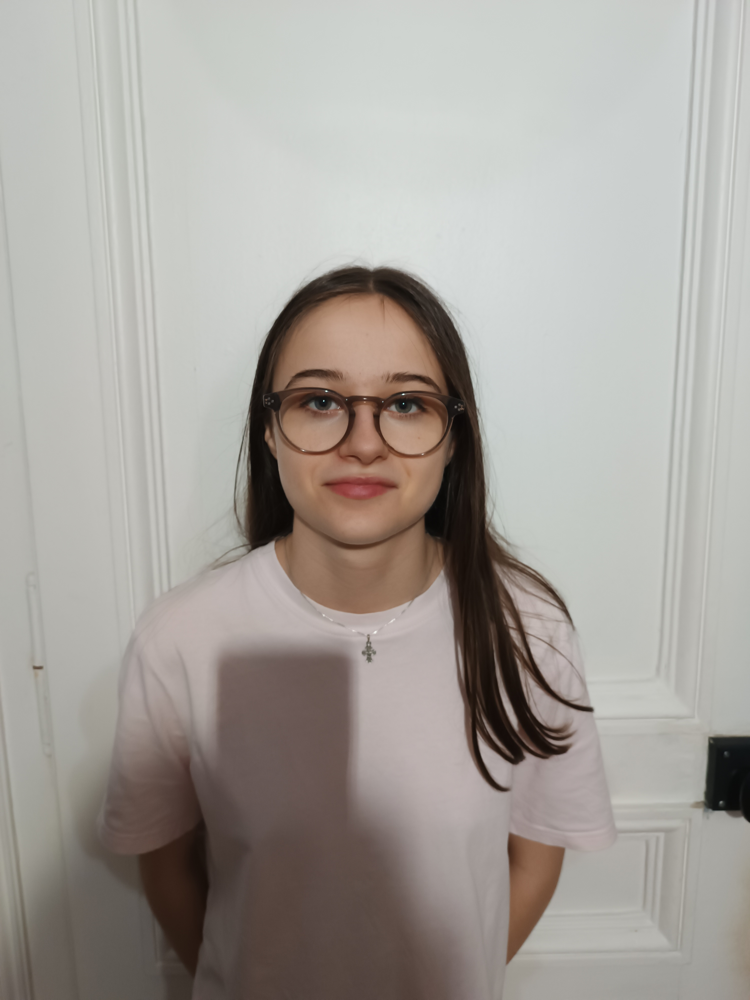

Adèle Alin
- Adresse : 6 rue Roland à LILLE
- Téléphone : 0775719818
- email : adele.alin@lasallelille.com
Objectif
Trouver un stage dans le domaine de l'informatique.
Compétences
Activités
- huitième année de pratique du piano au conservatoire de LILLE
- 5 ans de natation
- 5 ans de danse classique
- deuxième année de badminton
Compétences informatiques
- Powerpoint
- programmation (python)
- apprentissage rapide
Expérience professionelles
Stage à l’iut de Lille : département GEII
- Découverte du métier de professeur dans le supérieur
- Réalisation de circuits électroniques
- Programmation d’un bras robotique
- Test de circuits électriques
- Réalisation de cartes électroniques (perçage, brasage)
Diplômes
brevet des collèges mention bien
seconde générale option sciences de l'ingénieur au lycée La Salle à Lille :